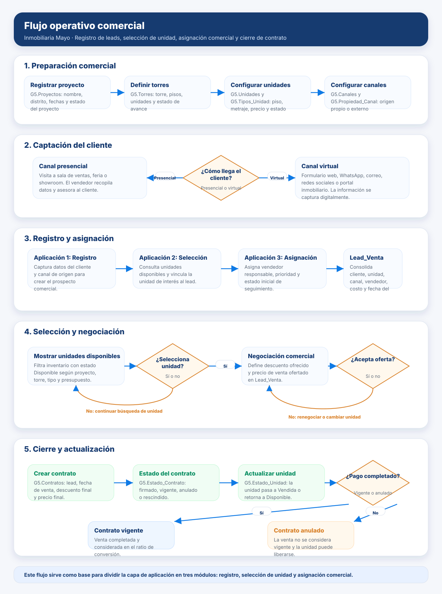

Aplicaciones propuestas para el proceso comercial inmobiliario
A partir del flujograma operativo del proceso de venta, la capa de aplicación se organiza en tres módulos: registro del cliente, selección de departamento y asignación del asesor de ventas. Esta división permite cubrir el flujo desde la captación del lead hasta su derivación comercial y posterior análisis en el modelo de datos.
Aplicación 1 · Registro del cliente
Captura los datos del prospecto y el canal por el que llegó: sala de ventas, web, redes, portal inmobiliario o feria.
Aplicación 2 · Selección de departamento
Permite consultar proyectos, torres y unidades disponibles para vincular una unidad de interés al lead.
Aplicación 3 · Asignación comercial
Deriva el lead a un vendedor, registra prioridad de atención y deja la oportunidad lista para seguimiento.
Flujograma operativo depurado
El flujo fue reorganizado para mostrar de forma ejecutiva cómo la inmobiliaria configura su oferta, capta clientes, registra leads, asigna asesores, negocia la unidad de interés y actualiza el estado del contrato. Se retiraron elementos visuales informales para mantener una presentación consistente con el GitHub Pages del proyecto.

Flujograma operativo del proceso comercial inmobiliario, desde la configuración de proyectos y unidades hasta el cierre de contrato.
Diseño de las tres aplicaciones
La propuesta divide la experiencia operativa en tres interfaces simples. Cada una responde a una etapa específica del proceso y se relaciona con las tablas creadas en la capa de datos.
Relación entre aplicaciones y tablas del modelo
| Aplicación | Objetivo operativo | Tablas relacionadas | Salida para analítica |
|---|---|---|---|
| Registro del cliente | Capturar datos del prospecto y canal de llegada. | G5.Clientes, G5.Canales, G5.Propiedad_Canal | Permite analizar volumen de leads por canal y perfil de cliente. |
| Selección de departamento | Consultar unidades disponibles y registrar la unidad de interés. | G5.Proyectos, G5.Torres, G5.Unidades, G5.Tipos_Unidad, G5.Estado_Unidad | Permite medir demanda por proyecto, torre, tipo de unidad y precio. |
| Asignación comercial | Asignar asesor y crear la oportunidad en la tabla central. | G5.Vendedores, G5.Lead_Venta | Permite evaluar rendimiento por asesor, canal y etapa del funnel. |
| Cierre de contrato | Registrar aceptación, contrato, vigencia y estado de la unidad. | G5.Contratos, G5.Estado_Contrato, G5.Estado_Unidad | Permite calcular contratos vigentes, ventas y ratio de conversión comercial. |
Agentes propuestos a partir del flujo
El flujograma también permite identificar oportunidades para automatizar tareas comerciales mediante agentes especializados. Estos agentes no reemplazan al equipo comercial, sino que reducen tareas manuales, priorizan leads y generan alertas accionables.
Agente de calificación de leads
Evalúa canal de origen, presupuesto, proyecto de interés y urgencia para clasificar el lead como alta, media o baja prioridad.
Agente recomendador de unidades
Sugiere departamentos disponibles según presupuesto, tipo de unidad, piso, metraje, proyecto y disponibilidad comercial.
Agente de asignación comercial
Deriva leads al asesor más adecuado considerando carga actual, desempeño histórico, canal y proyecto asignado.
Agente de seguimiento
Detecta leads sin gestión, oportunidades estancadas o clientes que requieren contacto posterior y genera recordatorios.
Agente de negociación
Revisa descuentos ofrecidos, precio lista y reglas comerciales para alertar cuando una oferta se aleja de los rangos esperados.
Agente de cierre y alertas
Monitorea contratos pendientes de pago, contratos anulados y unidades que deben cambiar de estado en el inventario.
Cómo aporta esta capa al dashboard
Las tres aplicaciones capturan la información necesaria para alimentar la tabla Lead_Venta, que luego es procesada por Fabric Data Factory, consolidada en Fabric Warehouse y explotada en Power BI. De esta forma, cada interacción comercial queda trazable y puede convertirse en indicadores como leads totales, contratos vigentes, conversión por canal, ventas por proyecto y rendimiento por asesor.
Cliente
Registra datos y canal de origen.
Unidad
Selecciona proyecto, torre y departamento.
Asesor
Recibe el lead y gestiona la oportunidad.
Warehouse
Centraliza los datos procesados.
Power BI
Presenta indicadores y storytelling comercial.